Snow reports · November 2026
Daily snow reports for skiers: where the snow is, what is coming and where to ski, from the SnowScope snow map and measuring stations. Every number comes from that day's data.

Italy gained significant snow cover in a week, with the Aosta Valley receiving 176 cm in 72 hours. SnowScope shows 30,400 km² white on 24 November.

Rosa Khutor above Krasnaya Polyana: usual snow by month at the base, mid-mountain and top over 34 winters, the December gamble and the trend.

Finnish Lapland against the Swedish mountains: usual snow by month at eight resorts over 46 winters, who is losing snow and where it lies now.

How snow depth changes month by month at three top Dolomites resorts across 46 past winters, from base to summit.

Telluride has 51 in (130 cm) on upper slopes today. Brian Head Resort leads the US West with 57 in (144 cm), but Telluride's recent gains matter more for skiers planning the week ahead.

Switzerland has 76 cm at Glacier 3000 on 23 November, more snow than in nine winters out of ten. The Bernese Oberland and Valais Alps received up to 144 cm in three days.

14 Swiss resorts tracked on 23 November; Zermatt leads with 63 cm depth, 29 cm more forecast by 26 November.
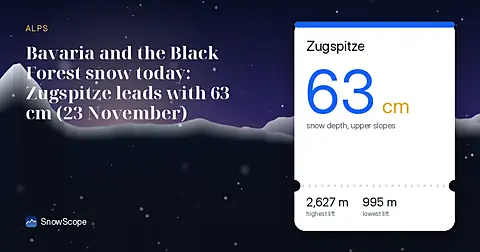
Zugspitze tops the region with 63 cm on 23 November. Nine resorts have snow; 34 cm fell in three days at Nebelhorn.

Prà Alpesina will see 57 cm of new snow by 26 November. Forecast data from 23 November shows heaviest falls on 25 November as freezing level rises.

La Pierre Saint-Martin snow forecast: up to 42 cm expected by 26 November (Pyrenees). At Astun, the freezing level reaches 1,960 m to 3,170 m on 24 …

Alpe d'Huez got 106 cm of fresh snow in 72 hours by 23 November. More powder coming, but watch for rain mid-week.

Twelve famous Alpine resorts ranked by their usual December snow depth at mid-mountain and the top, from 46 past winters, with the poor-December floor for each and the weeks that never fail.

Rain threatens upper slopes at Saddleback Mountain where 20 cm sits at 1,218 m. Freezing level rises to 3,760 m today, 22 November.

Mount Rose Ski Tahoe has 38 in (97 cm) on 22 November, more than four times last year's 9 in (23 cm). All four major resorts tracked show gains.

Whistler Blackcomb leads Western Canada with 153 cm on upper slopes. Snow covers 398,620 km² across 52 of 57 resorts on 22 November.

Whistler Blackcomb will receive 101 cm of new snow by November 25, far exceeding early-season norms. Mount Cain Alpine Park leads the region with 132 cm forecast.
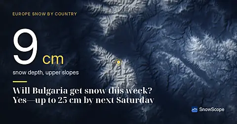
Bulgaria's mountains face significant snowfall in the next 7 days, with a peak of 10 cm on 28 November. Snow depth today is 1–9 cm at ski resorts; the Rila Mountains lead with 7 cm in 72 hours.

Croatia has 3 cm at Platak on 22 November; Slovenia's Sella Nevea holds 42 cm. Both countries face a thaw before the week's main snow event.

Hungary has no snow cover on 22 November, while Slovakia shows 13 %. The week ahead brings up to 8 cm, with the best chance on 26 November.
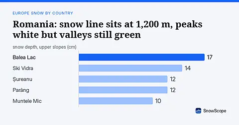
Snow covers 25% of Romania today as the winter season begins. The snow line is at 1,200 m, with 99% cover above 2,000 m. Data from 22 November 2026.

Wildcat Mountain forecast to gain 56 cm over 14 days. Week one (23–29 Nov) brings 29 cm, with 22 cm falling on 27 November. Data from 22 November.
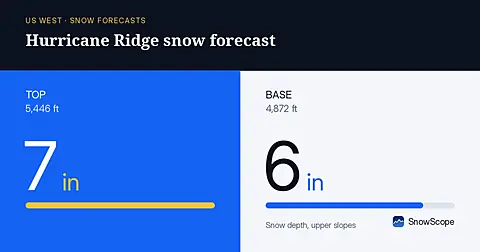
Mixed rain and snow at Hurricane Ridge through 25 November. Up to 24 in (61 cm) forecast near the top; rain falls below 4,528 ft (1,380 m). Data from 22 November.

Jackson Hole received 11 in (28 cm) of fresh snow in 72 hours. SnowScope shows 186 resorts with snow across the US West on 22 November.
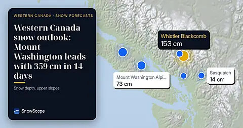
Mount Washington Alpine Resort forecast to receive 359 cm of new snow in the next 14 days, with the heaviest falls in week one. Data from 22 November 2026.

42 of 107 resorts in Slovakia show snow cover today. Vysoké Tatry leads with 33 cm at the summit as the season builds.

Sweden's snow cover stands at 314,500 km² on 22 November. SnowScope shows 2 cm in week one, then 12 cm in week two, with mountain peaks already holding 66 cm.
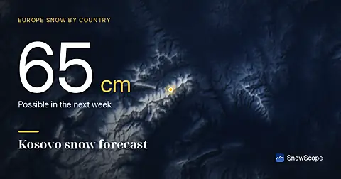
Kosovo's mountains face major snowfall ahead. SnowScope shows up to 65 cm in the next 7 days, with 19 cm expected on 28 November. Data from 22 November.

A major snow event is forecast for North Macedonia over the next week, with up to 47 cm expected by 2026-11-29. The heaviest falls arrive tomorrow.

Riksgränsen holds 54 cm on 22 November, tracking closely with the 63 cm typical for this date. Snow covers 94% of Norway's mountains.
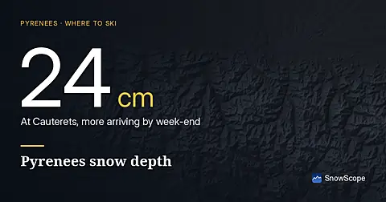
Cauterets Cirque du Lys leads the Pyrenees with 24 cm at the top on 22 November. Heavy snow forecast for 25 November will push coverage from 44 to 51 resorts.

Poland has 1,080 km² of snow on 22 November. Above 1,000 m almost all slopes are white; below, they are mostly bare.
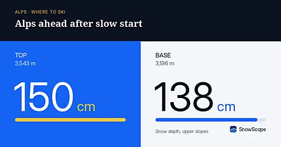
La Grave has 171 cm on upper slopes today, which is 68% of normal for late November. The Alps saw sharp gains this weekend.

Slovenia's mountains gained 1880 km² of snow cover in three days. The Julian Alps saw the most fall, with 40 cm, while lower ranges stayed dry.

The 0 °C level rises to 3200 m on Tuesday, bringing rain to mid-mountain slopes. Snow line stays above base at most resorts until Wednesday.

Kallin holds 11 cm at 40 m on 22 November, nearly double its normal depth. Best snow arrives in weeks 9–11 (early to mid-March).
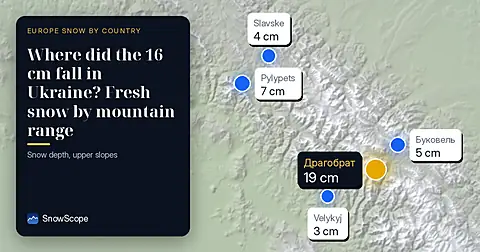
72-hour snowfall mapped across Ukrainian ranges: Chornohora led with 24 cm, Gorgany 19 cm, Borzhava 14 cm. Data from 2026-11-22.

The Alps will collect up to 95 cm of new snow in the next 14 days, with 63% arriving in the first week. Best conditions above 1500 m from November 23. Data from November 22.

German snow cover jumped from 5,460 to 10,730 km² in a week. The Allgäu Alps lead with 47 cm of fresh snow in 72 hours as of 22 November.

By 25 November, 64 cm of new snow forecast at Jungfraujoch Snow Fun Park. Data from 22 November.

Austria gained 11,600 km² of snow in seven days. Stubaier Gletscher leads with 67 cm. Data from 22 November 2026.
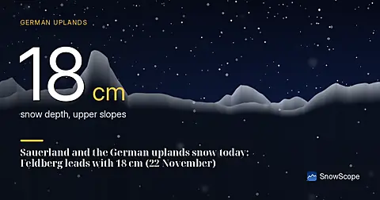
Feldberg has 18 cm on upper slopes (22 Nov). Three resorts hold snow; fresh 30 cm in 72 hours, 9 cm more by 25 Nov.

Swiss Alps covered 71 percent white versus 18 percent in France as of 22 November. Valais holds 166 cm in 72 hours.

Lech/Zürs leads with 47 cm depth and 46 cm fresh snow in 72 hours. All 11 resorts have snow. Data from 22 November.

La Grave has 171 cm of snow, far ahead of the typical 82 cm for late November. France's Alps gained 90 cm in 72 hours as of 22 November.

Port del Comte sits 1744–2122 m above Solsona: natural snow depth peaks at 26–40 cm across the mountain, mostly in January and February. Data from 46 past winters.

The Mölltal glacier above Flattach: usual snow depth at the base, mid-mountain and the top from 46 past winters, from the first snow in September to the May skiing, and why the depth is a different world from the valley.

Tignes climbs from 1559 m to 3447 m across 46 past winters. Base: 117 cm peak. Mid-mountain: 216 cm. Glacier: 372 cm. Data from November 2026.

Hafjell above Lillehammer month by month: usual snow depth at the base, mid-mountain and the top from 46 past winters, the first snow, the deepest weeks and how the recent winters compare.

Kvitfjell's 46-winter snow record: when to expect deep snow for the speed races and spring skiing on Norway's Olympic downhill course.

Why Trysil's snow report shows two very different numbers: usual depth at the base, mid-mountain and the top of Trysilfjellet from 46 past winters, month by month, and what it means for the runs you will ski.

Where did the most fresh snow fall in the Alps? Fresh snow at Le Reposoir Chalet Neuf: 128 cm in the last 72 hours, including 88 cm in the last 24. …

Italy has 101 cm at La Thuile ski on 22 November, three times the normal depth for this date. The Aosta Valley led with 242 cm in 72 hours.

Piau-Engaly sits at 1762 m with runs to 2527 m. Over 46 past winters, the usual peak depth is 88 cm at the base, 123 cm at mid-mountain and 159 cm at the top.

Gavarnie-Gèdre leads the Pyrenees with 26 cm on upper slopes on 22 November. Snow coverage has tripled in two days across the region.

Jungfraujoch leads Europe with 44 cm in 24 hours; Mount Cain Alpine Park forecast for 132 cm in 72 hours. Forecast from 2026-11-22.

46 winters of snow history at Alpe d'Huez show peak depths of 52 cm at base, 184 cm mid-mountain, 440 cm at top. Data from 1980–2026.
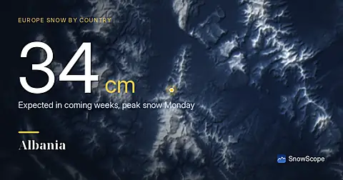
Fresh snow is filling Albania's high mountains fast. Up to 34 cm is forecast in the next week, with 16 cm expected on Monday 23 November.

Czechia's white cover fell from 1,780 km² to 620 km² in seven days. Snow above 1,200 m offers the best chance for skiing on 21 November.

77% of Finland's mapped high ground is snow-covered on 21 November. The snow line divides the country: continuous runs above 500 m, patchy terrain below.

Fresh snow fell unevenly across Polish mountains in 72 hours to 21 November. The Tatras lead with 21 cm; lower ranges collected less.

Romania's snow cover stands at 11% on 21 November, while Ukraine holds 52%. Fresh snow is building across Romanian peaks ahead of a 13 cm event on 23 November.

The 0 °C level reaches 12,861 ft (3,920 m) on 21 November in the US Northeast. Snow line peaks at 11,811 ft (3,600 m), above all resort tops.

Today's snow in the US Northeast, read, means thin early-season snow, icy mornings and soft afternoons and warm air that …

The forecast shows up to 199 cm across the US West in the next two weeks, with the heaviest snow arriving in week one. Data from 21 November 2026.

Mt Baker will see 22 cm of new snow by November 24, but the freezing level rises above 1,000 m on November 22, bringing rain-on-snow risk to lower slopes.

Telluride holds 50 in (127 cm) on upper slopes as of 21 November. Brian Head Resort leads the US West with 54 in (138 cm).

Kirkwood leads the US West with 109 cm on upper slopes as of 21 November. Early-season snow depth guide for skiers.

Two-week snow forecast for Western Canada: Mount Washington Alpine Resort forecast to receive 202 cm by 5 December, with the heaviest snow on 24 November.

Mount Washington Alpine Resort leads with 76 cm of new snow forecast by 24 November. Data from 21 November 2026.

150 cm on the upper slopes: that is why Whistler Blackcomb heads our list. Snow on the ground, snow from the last 72 hours, snow still to come: …
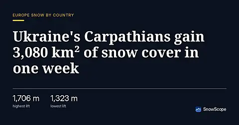
Ukraine saw snow cover jump from 6,040 to 9,120 km² in seven days. Драгобрат leads with 17 cm depth; heavy snow forecast through November.
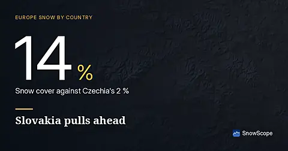
Slovakia has 2,680 km² under snow after 17 cm of fresh snow in 72 hours, far outpacing Czechia. Data from 21 November 2026.

Fresh snow fell unevenly across Germany in the past 72 hours: 39 cm in the Allgäu Alps, 31 cm in the Bavarian Alps, 16 cm in the Black Forest. Data from 2026-11-21.

Riksgränsen holds 167 cm today. SnowScope shows late March and mid-April are usually the snowiest weeks. Next seven days: up to 26 cm possible.
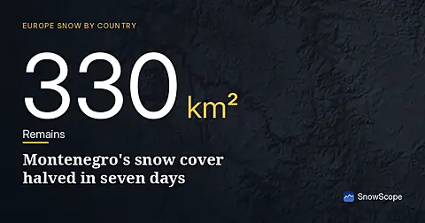
Snow-covered area fell from 3,570 km² to 330 km² in one week. Only the highest peaks above 2,000 m hold snow as of 21 November.

No snow on Atlas pistes on 21 November. High summits hold 1 cm at most. All three resorts are bare; the next storm may take weeks.

Rain above 2980m today at Gavarnie-Gèdre, but more snow arrives in four days. What to wear and bring for changing Pyrenees conditions.

Björkliden has 138 cm today. Sweden averaged 95 cm across measured resorts. Snow depth peaks in mid-April (weeks 14–15). Data from 21 November 2026.

Slovenia faces major snowfall over the next 7 days, with up to 53 cm expected. The heaviest falls arrive on 26 November. Data from 21 November.

0 °C level in the Alps next days: 1,330–3,210 m. Snow line peaks at 2,900 m on 22 November. Rain-on-snow risk at mid-mountain resorts Sunday 22 November.
Orelle sits at 74 cm on 21 November, matching the seasonal average of 64 cm. France has 12,530 km² of snow cover as fresh storms arrive.

Fourteen days of new snow across the Alps from 22 November to 5 December: Les Deux Alpes gets about 94 cm, with 73% arriving in week one. Data from 21 November.

Austria has snow across 56 percent of measured terrain on 21 November, far ahead of Germany at 7 percent. Vorarlberg received 47 cm in three days.

Snow in Switzerland on 21 November: snow depth on the upper slopes, fresh snow, the next three days and the pick for a short trip.

164 Italian resorts have snow today. Pfelders leads with 118 cm on upper slopes. Up to 55 cm fell in three days.

Kaprun leads Austria with 62 cm. Twelve resorts tracked on 21 November; more snow forecast through 24 November.

Switzerland's white ground grew by 6,410 km² in one week. Latest snow the forecast shows 19,880 km² covered as of 21 November.

Alps snow report, 21 November: Alpe d'Huez has 92 cm on upper slopes. Orelle leads the region with 136 cm. Fresh snow incoming by Tuesday.

La Pierre Saint-Martin receives 18 cm of new snow over the next days. Forecast for the Pyrenees from 21 November shows most snow above 1,900 m.

Les Arcs received 102 cm of fresh snow in the past 72 hours with 80 cm forecast by 24 November. SnowScope report for 21 November.

Germany has 1790 km2 of snow cover on 20 November, Austria leads with 44 percent white cover. The Allgäu Alps received 34 cm in 72 hours.

Montenegro's mountains could see 31 cm of snow in the week ahead, with 24 cm forecast for Thursday 26 November. Data from 20 November.

Slovakia lost 2,980 km² of snow cover in a week. High peaks still hold 17-28 cm, but lower slopes are bare. As of 20 November.

Sweden's snow cover reaches from sea level across 90 percent of the mapped area on November 20. Heights above 1000 m hold 42 cm average depth.

Romania gained 2,090 km² of snow cover in seven days. By 20 November, 4,000 km² lay under snow across the mountains, with new falls expected to push totals higher.

Rain falls on thin snow through Saturday as the freezing level stays high; Sunday's shift brings 32 resorts into snow cover and 20 cm forecast at Candanchu.
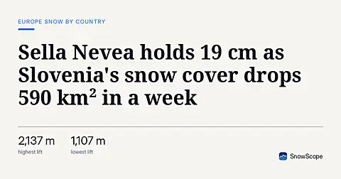
Slovenia lost nearly 600 km² of snow cover in seven days. Only 600 km² remain white as of 20 November, but high peaks still have good depth.

Snow report for 20 November: Fellhorn/Kanzelwand leads Bavaria with 44 cm, backed by 35 cm of fresh snow in three days.
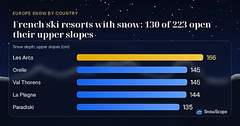
130 French resorts now have snow cover on 20 November. The Mont Blanc massif has received 297 cm in three days, with more expected.
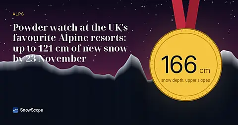
Val Thorens leads with 143 cm of fresh snow in 72 hours as of 20 November. Alpe d'Huez forecast to gain 121 cm by 23 November.

Vorarlberg received the most new snow in Austria over three days to 20 November. Up to 26 cm fell across large areas as a storm moved through the Alps.
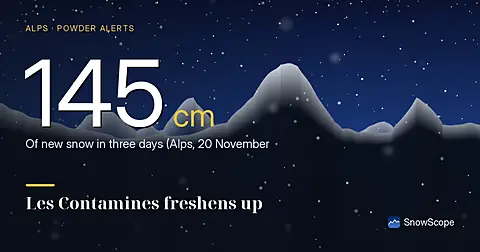
Les Contamines gained 145 cm of snow in 72 hours; upper slopes hold 115 cm. More powder is forecast for the weekend.

Italy shows 22 % snow cover on 20 November against Austria's 44 %. Monterosa Ski leads at 128 cm as fresh snow keeps falling.

5 resorts in the Alps, 46 past winters, one date: here is how today compares. Clearly above normal: 0. Confidence: good for the trend, lower for any …
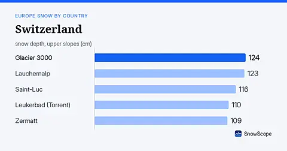
Glacier 3000 leads Switzerland with 124 cm after 128 cm of snow in 72 hours. Snow cover jumped to 64% across the country on 20 November.
Les Arcs leads with 166 cm on upper slopes. Snow falls through Sunday. Best runs are high and north-facing. Data from 20 November.

Mixed rain and snow expected across the Pyrenees over the next three days, with the freezing level rising above resort summits by Sunday. New snow forecast between 13–24 cm at altitude.

Early-season snow in the Alps is running 38% above the 46-year average. La Plagne's mid-slopes hold 36 cm more than usual for this date, with heavy snow forecast through Sunday.

The National Weather Service expects 10 to 20 inches in the Wasatch from Thursday to Saturday. Where Utah's snowpack stands against past winters, why Utah snow is lighter, and when to ski.
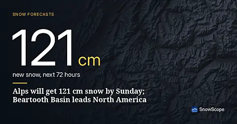
Alpe d'Huez will receive the most snow in the Alps over the next 72 hours. Beartooth Basin Summer leads the US West and Canada in fresh snow through Sunday.

What the measured snow gauges say about the North Lake Tahoe storm, why the first snow is heavy and wet, and how Sugar Bowl, Northstar and Diamond Peak compare with 46 winters.

About 28 inches of new snow at Mammoth and 26 inches at June Mountain on 18-19 November. What the storm is, how it ranks against past winters, and the best days to go.
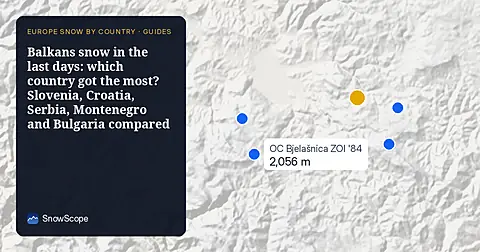
From 13 to 19 November 2026 Slovenia got the most snow and kept it; Serbia and Croatia had a deep but short white weekend; Montenegro only on Durmitor; Bulgaria almost none. The ranking, with links to each country report.

Only Borovets and Bansko have a trace of snow at the top today, 2 cm each. A week ago Borovets had 11 cm. Day by day, and the one snowy day in the forecast.

Tornik on Zlatibor had up to 39 cm on its upper slopes on 15 November 2026; by Wednesday it had melted. Kopaonik barely turned white. The week day by day and what comes next.

Fresh snow keeps falling at Tahoe resorts this weekend. Upper slopes at Palisades Tahoe Alpine Meadows hold 107 cm (42 in) today, 19 November.

Wildcat Mountain will receive the most snow in the Northeast over the next 14 days, with 29 cm forecast by our models as of November 19.

Savin Kuk above Žabljak picked up 22 cm of snow from 13 to 19 November and still has 6 cm today. Kolašin 1450 and 1600 are bare. The week day by day, and the next chances.

Seven independent ski areas in the West where an adult day ticket costs from $49 to $98.8 on weekdays, compared with the snow they usually have in December.

Pick a region, dates, budget and what matters; get every resort ranked with the likely snow at the start, the pass, hotel and food per person, chalets to book, and a game mode.

Up to 30 cm of snow fell on northern Velebit and Bjelolasica on Friday 13 November 2026. By Tuesday it was gone. Day by day, what the mountains kept, and when snow comes back.

Heavenly, Sierra-at-Tahoe and Mt. Rose have more snow on 19 November than in any winter since 1980-81. How much fell, the measured gauges, the weather behind it and the best days to go.
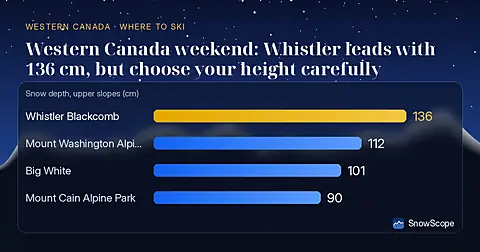
Whistler Blackcomb has 136 cm on upper slopes this weekend, but snow thins fast below 1500 m. Plan runs by elevation. Data from 19 November.

Snow is falling on Slovenia's ski mountains today: about 37 cm on Kanin and 21 cm on Krvavec. Where the snow lies, how it compares with past winters, and the next snowy day.
Alpine day passes from 36 EUR: nine resorts compared by price, kilometres of runs and the snow they usually hold, to find the best day of skiing for your money.

Pyrenees day passes from 46 EUR: six resorts in France, Spain and Andorra compared by price, then by the snow they usually have in December and January.

Glacier skiing from 68 EUR a day: we compared seven glaciers in France, Austria, Germany and Switzerland by price and by the snow they usually hold in December.

Telluride leads the US West with 125 cm on upper slopes on 19 November. Snow spread across the region to 782,430 km².
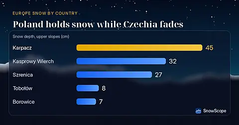
Poland has snow on 3% of ski terrain today while Czechia has none. Karpacz leads with 45 cm, but cover is melting fast across both countries.

Heavy snow is forecast for Ukraine's mountains over the next 7 days, with up to 28 cm expected. Data from 2026-11-19.
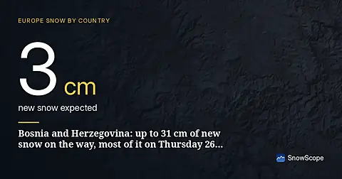
No snow yet on 19 November, but up to 31 cm is forecast across the week ahead. Thursday 26 November brings the heaviest fall at 27 cm.

Fresh snow fell unevenly across Slovakia in the past three days. The High Tatras and Low Tatras each gained 24 cm, while lower slopes saw little. Data from 19 November.

Hakuba Happo-one gets about 1.7 m of new snow at the top lift from 19 to 25 November, but rain at the base until 20 November. Day-by-day forecast at three heights.

UK has 10% snow cover with 16 cm at Nevis Range; Norway reaches 89% with 167 cm at Riksgränsen. Data from 19 November.
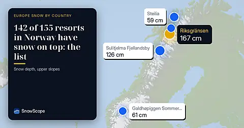
On 19 November, 142 Norwegian resorts have snow on upper slopes. Riksgränsen leads with 167 cm; 89% of high ground is white.

Six days of skiing from 191 EUR: we ranked ten cheap ski weeks in Europe by price, then checked 46 past winters to see where the snow is reliable.

Spain has snow on 0.3% of its high mountains today, far behind France's 13%. The Spanish Pyrenees got 26 cm in 72 hours. Data from 19 November.

Salla leads Finland with 25 cm on 19 November, 6 cm above the normal depth for this date. Snow cover grew sharply across the country in the past week.

Snow cover jumped from 90 km² to 760 km² in seven days. Fresh snow peaked at 30 cm in the high mountains on 19 November.

From 20 EUR on an opening weekend to 6-day passes before Christmas: a calendar of the cheapest early-season ski deals in the Alps for 2026, with the snow you can expect.
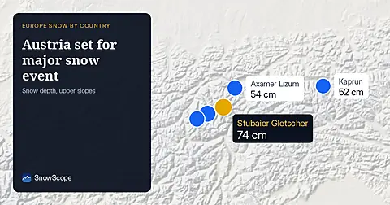
Austria's snow cover jumped to 48 percent this week. A significant storm arrives 23 November, with up to 55 cm forecast over the next week.

11 Romanian ski resorts have snow cover on 19 November, with the best depths above 2000 m. Fresh snow forecast up to 14 cm by 23 November.

New snow will reach the Pyrenees in two waves over 14 days, with 91 cm forecast at high altitude. The first week brings 49 percent of the total; week 2 stays steady. Data from 19 November.

France's snow-covered area grew from 6,040 km² to 11,870 km² in a week. The Mont Blanc massif received 240 cm in 72 hours by November 19.

New snow forecast for 15 Japanese ski resorts from 20 to 25 November: Hakuba and Tsugaike lead with about 90 to 97 cm at the top, Niseko about 35 cm.

Snow report for 19 November: all 8 resorts in Sauerland and the German uplands show 0 cm depth. Feldberg leads the forecast with 29 cm expected by 22 November.
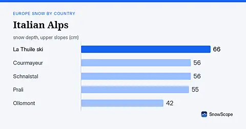
Fresh snow hit Italy's high ranges hard. The Aosta Valley received 215 cm in 72 hours; the Piedmont Alps got 76 cm. Data from 19 November.

Zugspitze leads German resorts with 53 cm on 19 November. Snow cover is growing; 38 cm possible in the next week.

Val Thorens leads with 133 cm on 19 November. All 12 UK favourite Alpine resorts have snow; fresh powder across the range.

Swiss snow depths on 19 November are well above normal. Glacier 3000 holds 60 cm, more than twice the typical depth for this date. Next week brings up to 125 cm more.

Snow-covered area jumped from 560 to 1,710 km² between November 17 and 19. Piau-Engaly holds the deepest snow at 15 cm on upper slopes as of November 19.

Only 3 of 318 snow stations in Japan had snow on the ground this morning. Here is where it is, what melted this week, and where the next snow falls.

How much snow will the mountains gain? Our table shows the resorts with the most new snow forecast for the next 24 hours and until 22 November, in …

Only 16 US Northeast resorts have skiable snow on 18 Nov. Thin cover and rain-crust risk mean careful gear choices. Forecasts for 19-21 Nov show no new snow.

Only 16 Northeast resorts hold snow on 18 November, with Tuckerman Ravine leading at 38 cm. No new snow forecast through Saturday.

China Peak will receive 33 in (83 cm) of snow by 21 November. Forecast issued 18 November for the US West.

Mount Washington Alpine Resort has 104 cm on upper slopes today. Whistler Blackcomb leads the region with 136 cm. Data from 18 November 2026.

Palisades Tahoe Alpine Meadows leads the US West with 30 in (75 cm) on upper slopes. Fresh snow and a strong forecast make it the weekend pick for 18 November.

Freezing level reaches 1,500 m at Banff Sunshine Village on November 19. Fresh snow fell across Western Canada in the last 72 hours, but rain threatens the new powder.

Crested Butte has 38 in (97 cm) on upper slopes on 18 November. Telluride leads the region with 50 in (126 cm). Snow covers 281,920 sq mi across the US West.

Western Canada forecast: 90 cm new snow at Mount Washington in the next two weeks, with 70 cm expected in late November and early December.

Fresh snow across the US West has built depths well above normal. At Palisades Tahoe Alpine Meadows, upper slopes hold 75 cm (measured 2026-11-18), compared to 10 cm typical for mid-November.

German mountains face significant snow arrival over seven days, with up to 29 cm possible. Data from 18 November.

Romania's mountains will see up to 25 cm of new snow in the next 7 days, with 12 cm expected on 23 November. Snow depth and forecast as of 18 November.

Fresh snow fell unevenly across the UK hills in the past 72 hours. The Southern Uplands received the most, while cover above 1000 m is now complete. Data from 18 November.

A sudden thaw on 18 November removed most of Ukraine's snow cover in 24 hours. Only 430 km² remained, down from 2,350 km² yesterday. New snow is forecast.

Mild weather erased nearly 490 km² of snow cover across Slovakia on 18 November. The High Tatras still hold 17 cm of new snow from the past 72 hours.

27 of Finland's 67 resorts have snow on 18 November. Upper slopes above 1000 m hold 41 cm on average across the country.

Zermatt has 47 cm on upper slopes today, 690% above the November median. The 0°C level stays above 2200 m through Friday.

Sweden has snow on 83% of high ground; Finland 55%. Sweden's best resort holds 140 cm, Finland's 26 cm. Data from 18 November.

The 0 °C level swings between 1,900 m and 3,670 m across the Pyrenees 19–21 November. Where does rain turn to snow at each resort?

Austria's glacier resorts lead the country after 14 cm fell in the last 72 hours. Snow cover grew to 18,140 km² as of 18 November.
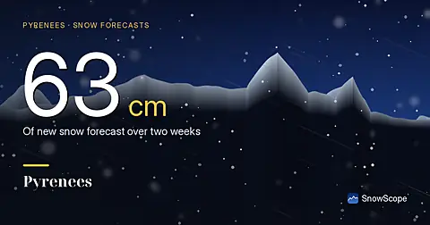
The Pyrenees will gain up to 63 cm of new snow in the next 14 days, with 70% arriving before 25 November. Data from 18 November.

Norway has 89 % snow cover across 249,960 km² on 18 November, while Finland sits at 55 %. Riksgränsen leads with 168 cm.

Snow report for 18 November: Zermatt leads Swiss resorts with 47 cm on the upper slopes. Fresh snow arrives across the Alps.

Fresh snow fell across France's high mountains in the past 72 hours. The Mont Blanc massif received the most: 180 cm. Data from 2026-11-18.

Snow in Austria on 18 November: snow depth on the upper slopes, fresh snow, the next three days and the pick for a short trip.
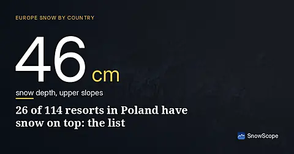
26 Polish resorts have snow today, with Karpacz leading at 46 cm. SnowScope data for 18 November 2026.

Swiss ski areas are running 142% of normal snow cover for November 18. Glacier 3000 tops the ranking with 52 cm, ahead of major storms forecast.

New snow forecast for the Alps through early December. Saint François Longchamp leads with 228 cm expected over 14 days, starting with 35 cm on Thursday.

Italy faces a major snow event: up to 95 cm is forecast for the next 7 days, with 34 cm expected on Friday 20 November. Data from 18 November.

Alps snow report 18 November: Orelle leads with 111 cm upper-slope snow. Weekend forecast brings 100+ cm new snow at top resorts.

No new snow expected at Jbel Hebri or Oukaïmeden in the next 14 days. The Atlas will see less than 1 cm total through early December, based on the forecast for 18 November.

Alpine snow forecast 18 November: 110 cm expected at Orelle, 105 cm at Les Grands Montets. Best snow arrives Thursday and Friday.

Orelle leads the global forecast with 110 cm in 72 hours. Europe dominates; North America trails. Data from 18 November.
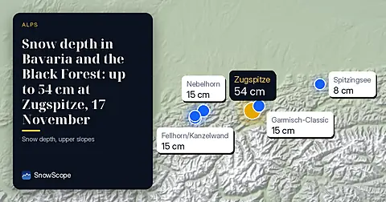
Snow in Bavaria and the Black Forest on 17 November: snow depth on the upper slopes, fresh snow, the next three days and the pick for a short trip.

Ischgl leads Austria's snow forecast with 20 cm coming by 20 November. On 17 November, all 12 resorts have snow on upper slopes.

Snow covers only 20 km² of Montenegro on 17 November. The snow line sits at 2,200 m; only Ski centar Savin kuk has skiable depth.

Serbia has 30 km² of snow cover on 17 November. Only Avantura park holds 3 cm. Up to 8 cm is forecast for the week ahead, with 6 cm possible on 23 November.

Croatia snow today, 17 November: snow cover, new snow, snow depth by height, the next days and the best resorts.

Snow covers 20 km² across Bosnia and Herzegovina on 17 November. Expect 15 cm in the next week, with 11 cm possible on 23 November.

Albania has 60 km² of snow cover on 17 November. The snow line sits at 2,200 m; only the highest peaks hold any white.

50 km² of snow cover in North Macedonia on 17 November, with up to 6 cm forecast for 23 November. Ski areas still waiting.

Les Grands Montets saw 74 cm of new snow in the last 72 hours, with more forecast for the coming days, according to our model on November 17, 2026.

Austria is behind: Kühtai has 20 cm, a normal 17 November has 33 cm. Snow cover, new snow, resorts and the days ahead in Austria on 17 November.

Thaw in Bulgaria: 330 km² of snow cover gone in a day. Snow cover, new snow, resorts and the days ahead in Bulgaria on 17 November.

Finland or Sweden? Where the snow is better on 17 November. Snow cover, new snow, resorts and the days ahead in Finland on 17 November.

Snow is coming in France: up to 87 cm in the week ahead. Snow cover, new snow, resorts and the days ahead in France on 17 November.

Val Thorens leads UK Alpine favourites with 108 cm now and 102 cm forecast by 20 November. Data from 17 November.

Rapid snow loss across Italy on 17 November as temperatures rise. Only 12,540 km² remains covered, down from 21,210 km² yesterday. The Aosta Valley saw 134 cm of new snow in 72 hours.

Norway's snow cover is growing fast. Up to 39 cm of new snow is forecast over the next seven days, with the heaviest fall on November 20.

Poland's snow-covered area shrank from 1,300 to 710 km² in a week. Karpacz holds the deepest snow at 36 cm as of 17 November.

Mild day in Romania: the snow retreats to 1,700 m. Snow cover, new snow, resorts and the days ahead in Romania on 17 November.
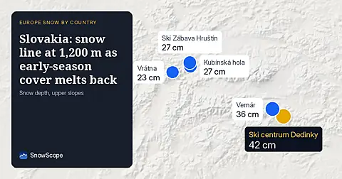
Slovakia's snow cover dropped to 1,830 km2 today. Snow sits mostly above 1,200 m; the High Tatras and Low Tatras lead with 8 cm of new snow in 72 hours.

79% of Sweden's ski areas show snow today. Upper slopes at Björkliden and Abisko carry 131 cm. The Hemavan fjells led the past 72 hours with 15 cm of fresh snow.

Fresh snow fell unevenly across Swiss mountains. The Valais Alps received 92 cm in three days; the Bernese Oberland 54 cm. Data from 17 November.

UK gained 8,380 km² of snow cover by 17 November. The North Pennines led with 27 cm in 72 hours.

Ukraine's snow cover dropped to 6% today as the Carpathians melt back. Poland holds twice the white share. Both countries face fresh snow by Friday.

Two-week snow outlook in Andorra: 13 cm and 21 cm. Snow cover, new snow, resorts and the days ahead in Andorra on 17 November.

Only 22 of 170 Czech ski areas show snow cover on 17 November. The Jeseníky and Krkonoše lead with 9 cm and 8 cm in 72 hours. More snow arrives from 20 November.

Slovenia has only 6 % white cover today against Austria's 34 %. Fresh snow in the Julian Alps offers the best chance for early season runs. Data from 17 November.
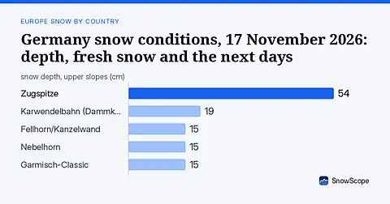
The snow is shrinking in Germany: 840 km² gone since last week. Snow cover, new snow, resorts and the days ahead in Germany on 17 November.

Kosovo snow today, 17 November: snow cover, new snow, snow depth by height, the next days and the best resorts.

Orelle holds 42 cm, close to the typical 53 cm for mid-November. Fresh snow forecast across the Alps over the next three days.

96 cm of new snow forecast for Les Arcs over the next three days, with today bringing the heaviest falls.

The two-week picture in the US West, 17 November to 30 November, drawn from the two forecasts that reach two weeks, ECMWF and GFS. Middle of the …

Whistler Blackcomb saw 76 cm of new snow in the last 72 hours, with Mount Cain Alpine Park also receiving 64 cm, as of November 16, 2026.

Albania forecasts 9 cm of snow rising to 22 cm over two weeks, based on our model from November 16.

On 16 November, Andorra has snow cover on just 2 % of its area while France climbs to 11 %; the gap reflects autumn patterns, with deeper falls forecast next week.

215 of 277 Austrian ski resorts have early-season snow on 16 November. The snow line sits at 1500 metres; expect 50 cm in the next week.

Thaw in Bosnia and Herzegovina: 600 km² of snow cover gone in a day

Bulgaria covers just 2% in white with 5 cm at Borovets on its first snow day, while Romania shows 10%, measured 2026-11-16
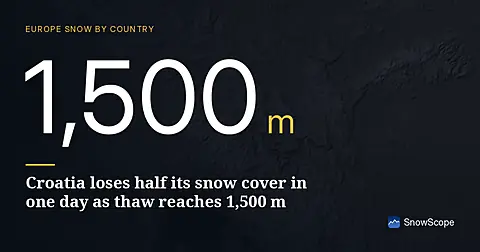
Mild conditions erased 950 km2 of snow across Croatia on 16 November. Only 880 km2 remains, mostly above 1,500 m. Next snow arrives 21 November.

Thaw has shrunk Czechia's snow cover from 1,250 km² to 720 km² in one day. Measured 16 November. Fresh snow arrives 17 November.

Finland gained 138,530 km² of snow cover in a week, reaching 157,360 km² as the season opened. Data from 16 November 2026.

France or Switzerland? Where the snow is better on 16 November. Snow cover, new snow, resorts and the days ahead in France on 16 November.

German Alps show just 43% of normal snow depth across tracked resorts on 16 November, well behind schedule as the season opens.

Greek mountains have only 10 km² of snow cover on 16 November. The first real snow arrives around 21 November, but resorts stay bare for now.

Hungary snow today, 16 November: snow cover, new snow, snow depth by height, the next days and the best resorts.

Ireland has 0 cm of snow across its mountains on 16 November. Early-season conditions remain dry; check back in winter.

Monterosa Ski holds 99 cm, 38% above normal for mid-November, as Italian Alps gain early snow on 16 November.

Kosovo's two-week snow outlook: 7 cm by November 23 and up to 18 cm from November 24-30, based on satellite data as of November 16.

SnowScope shows 11 cm in the next week and 22 cm Nov 24-30. Data from 16 Nov.

North Macedonia's mountains will see modest snow this week, then heavier falls next week. Data from 16 November.

Fresh snow from a three-day storm peaked at 76 cm in Jotunheimen and 74 cm in Hardangervidda, Norway's high ranges, on 16 November.

Rapid thaw removed nearly 44% of Poland's snow cover on 16 November. Only 1,170 km² remains white, with recovery expected from 17 November.

No snow covers Portugal's ski mountains on 16 November. The first flakes arrive late next week, with up to 1 cm by 23 November.

Snow coverage in Romania dropped from 12,900 km² to 6,630 km² in a week, but peaks above 1,500 m keep their white cover as of 16 November.

Despite 60 cm of fresh snow in 72 hours, Scandinavia's mid-November depths are well below average as of 16 November.

Riksgränsen dominates Scandinavia with 173 cm of snow depth measured on 16 November, holding far more mountain water than any rival resort in the region.

Three of Serbia's nine resorts hold measurable snow on 16 November. Avantura park tops the ranking with 28 cm depth at its station.

Slovakia's snow-covered area rose sharply to 2,020 km² in one week. Ski centrum Dedinky leads with 48 cm. Data from 16 November.

Early November snow covers 1,130 km2 of Slovenia. The ground turns white above 2,000 m elevation; below that, most slopes stay brown. Data from 16 November 2026.

Spain's snow-covered area fell to 310 km² on 16 November. Only 6 of 31 resorts have skiable snow, led by Aramón Cerler at 17 cm.
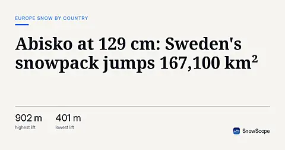
Sweden's snow cover grew by 167,100 km² in one week. Abisko holds 129 cm as early-season water accumulates in high fells. Data from 16 November.

Snow model forecasts 112 cm in Switzerland by November 24, with 29 cm on November 17. Fresh water accumulates across the high Alps over the coming week.
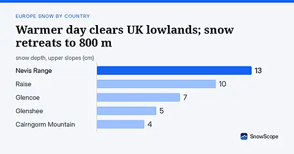
Warm weather on 16 November removed 1290 km2 of UK snow cover. The snow line is now at 800 metres; fresh snow arrives tomorrow.

Ukraine's snow cover fell from 5,090 km² to 1,650 km² in a week. As of November 16, high terrain above 1,500 m held 89% cover. Up to 25 cm snow forecast in the next 7 days.

Sestriere forecast for 23–29 November: 30 cm at the top, with a range of 15–44 cm. Wednesday 25 brings the peak snowfall.

Fresh snow arrives at Madonna di Campiglio next week: 27 cm at the summit, with the heaviest falls on 25–27 November. Best day to ski is 26 November.

Val Gardena gets 11 cm at the top next week, most of it on 25–26 November. The base receives only 6 cm, suggesting a snow line on the lower slopes.

Cortina d'Ampezzo gets 13 cm at the summit next week (5–21 cm range), mostly on 25–26 November. Light refresh, not a base builder. Data from 16 November 2026.

Livigno's next week brings 19 cm median at the top (6–31 cm range), peaking Wednesday 25 and Thursday 26. Data from 16 November.

Courmayeur gets 26 cm of snow next week at 2700 m, with a range of 8–44 cm. Best days are 24–26 and 28–29 November. Forecast from 16 November 2026.

Next week Cervinia receives 23 cm at the top (3400 m), with Thursday 26 November as the peak snowfall day. Forecast from 16 November 2026.

Saalbach expects 17 cm mid-range at the top next week (23–29 Nov), with the best day on 29 Nov. Range 3–31 cm shows wide uncertainty.

Stubai Glacier expects 14 cm at the top next week (23–29 Nov), with the best snow on Thursday 26 November. Data from 16 November.

Hintertux gets 14 cm at the top next week (23–29 Nov): a surface refresh on the glacier, not a powder storm. Data from 16 November.

Mayrhofen forecast for 23–29 November: top gets 17 cm (2–31 cm range), best day is 29 November with 5–10 cm. Data from 16 November.

Kitzbühel forecast for 23–29 November: 18 cm at the top, with Friday and Sunday bringing the most snow. Data from 16 November.

Obergurgl will get 13 cm at the top next week (23–29 Nov), with the best day on 26 Nov. Light refresh, not a storm.

Sölden forecast: 13 cm at 3100 m next week, peaking Thursday 26 November. Upper slopes hold most snow; base gets 8 cm. Data from 16 November 2026.

Lech-Zürs faces a split forecast: modest snow this week, then 30 cm next week (7–53 cm range). Best day is Sunday 29 November.

Next week Ischgl's top slopes collect 18 cm (forecast 23–29 Nov). Thursday 26 is the heaviest day. Data from 16 November 2026.

St. Anton forecast for 23–29 November: 25 cm upper slopes, 25 cm mid-mountain, 18 cm base. Sunday 29 November is best. Data from 16 November.

Andermatt forecast for 23–29 November: 21 cm at the top, 19 cm mid-mountain, 15 cm at the base. Best snow on Wednesday 25 November.

Saas-Fee gets 22 cm on upper slopes next week, with Thursday 26 November the heaviest day. Forecast from 16 November 2026.
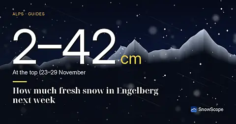
Engelberg snow forecast for 23–29 November 2026: 22 cm at the top (2–42 cm), 7 cm at the base, snowiest day Thursday 26 November, with neighbours compared.
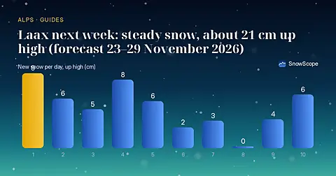
Laax forecast 23–29 Nov: 21 cm at the top, 17 cm mid-mountain, 6 cm at base. Thursday 26 is the heaviest day.

Davos forecast for 23–29 November: 16 cm at the top, Thursday 26 November heaviest. Snow line sits high; best on Parsenn.

St. Moritz forecast for 23–29 November: 19 cm at the summit, 17 cm mid-mountain, 16 cm at base. Best snow Wednesday 25 through Friday 27.

Verbier's upper slopes get 24 cm next week (5–42 cm range). Thursday 26 November is the peak day. Forecast from 16 November.

Zermatt gets 23 cm of snow next week at 3800 m, with Thursday 26 November the best day. Forecast from 16 November 2026.

Next week Megève's top slopes will see 27 cm of snow (range 9–46 cm). Wednesday 25 brings the peak, with 7 cm. Data from 16 November.

Next week at Flaine: 27 cm forecast at the top (9–46 cm range), with four key snow days. Data from 16 November.

Avoriaz forecast for 23–29 November: 29 cm at the top (range 9–48 cm), 27 cm mid-mountain, 17 cm at base. Best days: 24, 25, 26, 29 November.

Serre Chevalier forecast for 23–29 November: 47 cm at the top, 40 cm at mid-mountain, 18 cm at the base. Wednesday 25 November is the peak day.

La Grave's top slopes near 3400 m will collect 49 cm in the week of 23–29 November 2026, with Wednesday 25 as the peak day. Data from 16 November.
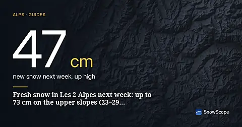
Les 2 Alpes forecast for 23–29 November: 47 cm at 3200 m, 41 cm at 2400 m, 14 cm at base. Wednesday 25 is the peak day.

Alpe d'Huez forecast for 23–29 November: 40 cm at the top, 35 cm mid-mountain. Wednesday 25 is the key day. Data from 16 November.
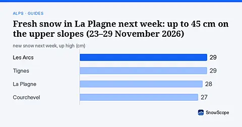
La Plagne's upper slopes forecast 28 cm of fresh snow next week (23–29 Nov), building on 99 cm from earlier. Data from 16 November 2026.

Les Arcs forecast for 23–29 November: 29 cm at the top, 26 cm mid-mountain, 12 cm at the base. Data from 16 November.

Méribel's upper slopes collect 28 cm next week (23–29 Nov); most falls Wed–Thu and Sun. Data from 16 Nov.

Courchevel gets 27 cm at the top 23–29 November, with Wednesday 25 as the heaviest day. Forecast from 16 November.

Val Thorens receives 30 cm at the summit next week (23–29 Nov), with the best day on 25 Nov. Snow data from 16 November.

Tignes will collect 29 cm at the top next week, with Thursday 26 November as the snowiest day. Forecast from 16 November.

Val d'Isère gets 28 cm next week (10–46 cm range) with Thursday 26 November as the peak snowfall day. Forecast from 16 November 2026.

Chamonix's next week brings 27 cm at the top (8–46 cm range), peaking on Wednesday 25 November. Forecast for 23–29 November 2026.

Orelle reached 31 cm by 16 November, up 17 cm in one week. The Alps are forecast to get up to 103 cm more snow by 19 November.

Is there more snow than a year ago? We compared today with 15 November last winter at 4 resorts in Western Canada: 2 of them have more snow now, …

La Grave leads the Alps with 97 cm on upper slopes. Snow coverage is shrinking as early winter builds unevenly across the region on 15 November.

The Atlas holds just 20 km² of snow on 15 November, all on high summits up to 4 cm deep. No snow at ski resorts; none forecast through 18 November.

The snow has pulled back since 13 November, from 6,880 sq mi (17,820 km²) to 6,039 sq mi (15,640 km²) today; for 18 November our forecast gives …

2 of 4: that is how many resorts in the US Northeast are clearly above normal today. How does this winter look so far? We set today's snow at 4 …

Mount Washington Alpine Resort leads with 158 cm at the top on 15 November. Fresh snow at Whistler Blackcomb and Mount Cain Alpine Park also scores high for November skiing.

Pyrenees snow report 15 November: mixed rain and snow at Cauterets, 7–19 cm fell in 72 hours near the summit. More coming by 18 November.

At Big White on 15 November, the upper slopes hold 68 cm near the summit while the base remains bare; an extreme vertical gradient typical of early season.
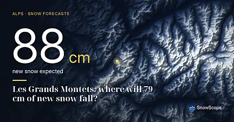
79 cm new snow forecast for Les Grands Montets from 16–18 November, mostly above 2000 m elevation, based on forecast from 15 November.

At Andermatt (2963 m) the forecast gives 75 mm of precipitation from 15 November to 20 November. During the wet hours the 0 °C level stands near 2160

Rain forecast as freezing level climbs to 4080 m; snow measured on 15 November is thin (under 20 cm) at all major Pyrenees resorts.

Tuckerman Ravine holds 24 cm on upper slopes. Early-season snow is thin; stay on groomed runs and check lifts before you go.

Les Deux Alpes: how much fresh snow fell? 38 cm in 72 hours (15 November). Where did the most fresh snow fall in the Alps? La Grave got 41 cm of new …

Manning Park Resort has 22 percent of normal snow on 2026-11-15, with best historical snow arriving in weeks 12-14, still months away.

Courmayeur leads forecast with 88 cm in 72 hours; snow depth is at 142 percent of normal for mid-November as of November 15 data.

Beaver Mountain offers fixed-price tickets at $75 with no peak surcharge. Early December is often thin; aim for mid-month or later when snow is more reliable.

Bridger Bowl charges $86 online for 2026/27. Mid-mountain has 20 in (50 cm) on 15 December in half of winters; Christmas week odds improve to 78 %.

High Colorado ski area holds weekday lift ticket at $49 for 2026-27; mid-mountain snow reaches 26 in (66 cm) by mid-December in a typical winter. Data from 13 November 2026.

Sunlight near Glenwood Springs faces an early-season gamble in December. By mid-month you can expect 26 in (67 cm) at mid-mountain, though only 72% of winters reach that depth.

Timberline's mid-mountain has 52 in (132 cm) typical snow on 15 December. Upper slopes reach 58 in (147 cm). Full-day tickets start at $129 off-peak.

Seven US West ski areas offer weekday discounts in December. Ski Cooper saves $50 per day Monday-Friday, Mt. Baker $16.62 off-peak. Mid-mountain snow odds range from 70% to 93% by December 15.

Himos opens a prepared cross-country loop on 14 November as natural snow remains absent from the forest floor around this Finnish resort.

For a December trip, is the Indy Pass worth $419? We checked seven member areas and their snow odds: the pass pays on the third area visited.

Lofsdalen has 6–8 cm across the valley as of 13 November 2026, with 7 cm forecast over the next week and no rain threat.

Lookout Pass midweek ticket costs $63 reserved ahead. By mid-December the upper mountain usually holds 30-37 in (75-95 cm). Data from 13 November 2026.

Local Missoula resort near 7,530 ft (2,296 m) with $78 weekday lift tickets. Mid and top slopes typically hold 30–37 in (76–93 cm) by mid-December. Data from 13 November 2026.

On 14 November, Narvikfjellet has about 50 cm at the top and nothing at sea level. Snow depths vary with height by 1,000 metres.

Røros sits at 630 m on a mountain plateau. On 13 November, 11 cm lay measured at the weather station—thin but real winter snow for the sled-dog season.

Romme Alpin received patchy early snow on 13 November 2026. Borlänge station 12 km away measured 4 cm; Ludvika had 10 cm. Rain dominates the forecast.

Schweitzer's 3-Pack gives three days for $249 on a ridge rising from 4,010 ft to 6,390 ft. Mid-mountain snow on 15 December averages 35 in (90 cm), with 85 % of winters above 20 in (50 cm).

Krvavec mid-mountain has 13 cm typical snow on 15 December in 46 winters, but bare ground in 11 of them. Day pass EUR 47.

Ski 157 km of mapped runs in Serre Chevalier where the top of the mountain has a 100 % chance of snow by mid-December.

Beitostølen has 12 cm measured at the weather station on 13 November. The whole ski area sits at the same altitude band, so snow depth barely changes from base to summit.

Vuokatti snow conditions in mid-November 2026: the stations at Sotkamo measured 0 cm on 13 November, Kajaani 1 cm; about 9 cm is forecast this week but some of it as rain; slopes aim to open 4 December. 46 past winters.

Turracher Höhe has 23 cm at mid-mountain on a typical 15 December, but only 39% of winters reach 30 cm there in mid-December. Data from 13 November 2026.

On 13 November, Kindsjön station at 425 m near Branäs measured 27 cm of snow while the valley floor stayed bare. Height is everything this week in Värmland.

Hochkar mid-mountain has 38 cm on a typical 15 December, and 63 % of winters had 30 cm or more in that week. Day tickets from EUR 32.90 on quiet dates.
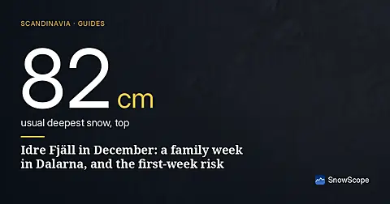
Idre Fjäll's December snow odds improve sharply after mid-month. On 13 November, the typical mid-mountain depth on 15 December is 32 cm.

Norefjell received 14 cm of fresh snow in the past week, with 45 cm now on the upper slopes. Data from 13 November 2026.

Tahko opens on made snow as natural cover melts. Expect 7–8 cm in the next week; rain and wet snow likely. Only 2 lifts running now.

Brighton leads in early December with 37 in (94 cm) typical snow on the 15th. Wolf Creek catches up by Christmas. Prices and reliability compared.

Ten European ski resorts ranked for December value, led by Les 2 Alpes with 75 cm of mid-mountain snow.

Brundage Mountain offers reliable early-season snow near McCall, Idaho. Typical mid-mountain depth reaches 30 in (77 cm) by mid-December, with tickets starting at $65 on select days.

Boí Taüll starts at 2039 m and beats Baqueira Beret on day-pass price, though early December snow still takes some patience.

Tänndalen has 7 cm at its base station on 13 November, with 8 cm forecast in the next week. Ramundberget opens 19 December.

Sälen December skiing: 28 cm on a typical 15 December and 48 % of winters with 30 cm in mid-December, down from the 1980s; Trysil next door does better.

Rovaniemi's first snow arrived on 13 November: 7–8 cm at ground level. Here's what husky farms charge, when they open, and how to walk your dog safely in the Arctic.

Snow King sits at the base of Jackson. By mid-December, the mid-mountain usually holds 28 in (71 cm). Data as of 13 November 2026.

Orcières Merlette offers a high base at 1826 m and a 6-day pass from 227 EUR, making it a reliable choice for a December ski trip.

Is Alpe d'Huez worth it for December 2026? We check the snow odds, the starting price of 58.00 EUR, and compare it with Les 2 Alpes.

Myrkdalen sits behind normal for mid-November, but 44 cm of new snow is forecast at the top in the next week. Data from 13 November.

Slovenia's ski passes are the cheapest (Krvavec EUR 205 for 6 days), but natural December snow there is rare; Lachtal, the Hochkar and the Mölltal glacier do better.

Loveland sells $60 online tickets through December 13, then $159 from December 14. Early December snow averages 20 in (50 cm) at mid-mountain, but the base is half as deep as mid-winter.

Cauterets offers 25 km of runs for 46 EUR, but our snow history shows that the best chance for cover is the last week of December.

Kiruna town has 0 cm of snow on 13 November. Dog-sledding operators work around thin early-season snow. What to know about tours and local rules.

Lachtal costs EUR 62 a day and children under 7 ski free. Mid-mountain had 30 cm or more in 72 % of Decembers mid-month onwards. Snow depth on 13 November 2026.

Saariselkä has 4 cm measured at its station on 13 November. About 22 cm is forecast for the next week. The usual depth here on 14 November is 17 cm.

White Pass rewards early bookings on weekdays. By mid-December, mid-mountain holds 40 in (102 cm) in a typical year. Data from 13 November 2026.

Ski the 131 km of runs in the Forêt Blanche this December with a six-day pass for 298 EUR.

Riksgränsen holds 9 cm at base level on 13 November. Both resorts stay closed until February; the Arctic darkness, not snow depth, sets their season.

Ruka's 6-day pass costs EUR 265. Snow odds jump from 39% in early December to 85% by Christmas week. Plan mid-month or later.

Monterosa Ski day passes run from 40.00 to 71.00 EUR online. In December the snow is up high: 124 cm usual at 3030 m, 6 cm at 1207 m.

Hafjell has about 2 cm at the top on 14 November. The forecast adds 9 cm next week, but the base stays bare.

Wolf Creek holds 34 in (87 cm) at mid-mountain on a typical 15 December. Peak prices start 20 December. Data: 13 November 2026.

On 15 December at Fellhorn/Kanzelwand: 63 cm at 1965 m top, 30 cm at mid-mountain, only 10 cm at 918 m base. Plan accordingly.

On 13 November 2026 the weather stations in Stockholm and Helsinki measured 0 cm of snow while Sälen had 45 cm and Umeå 20 cm. Height, the sea, the city and the track of the storms explain it, with numbers from 46 past winters.

Plan your December 2026 trip to Les Orres by matching weekly pass prices with our snow history of 46 past winters.
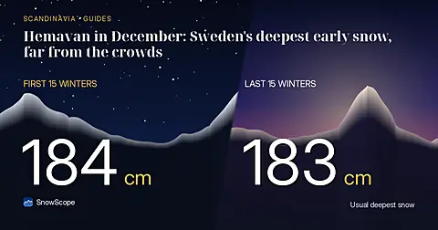
Hemavan's mid-mountain has 82 cm of snow on a typical 15 December. Every winter in 46 years had 30 cm or more in mid-December. Data from 13 November 2026.

Snow is thin and patchy at Pyhä-Luosto on 13 November, but up to 23 cm is forecast in the next seven days across all heights.

Brighton's mid-mountain typically holds 37 in (94 cm) on 15 December. Data as of 13 November 2026.

Compare Grandvalira and Spanish resorts in December 2026 for snow depths, lift heights, and prices starting from 49.00 EUR.

Vemdalen snow conditions in mid-November 2026: Swedish weather stations around Vemdalsskalet and Björnrike measured 6 to 12 cm on 13 November after a snowy two days, about 8 cm more this week, opening plans and 46 past winters.

Pitztaler Gletscher holds December snow better than most Alps resorts: 87 cm at mid-mountain by mid-December, with every recent winter above 30 cm. Data 13 November 2026.

Voss will see 35 cm at the summit but rain at the base over the next week. Snow sits above 600 m, measuring 10 cm at nearby Mjølfjell on 13 November.
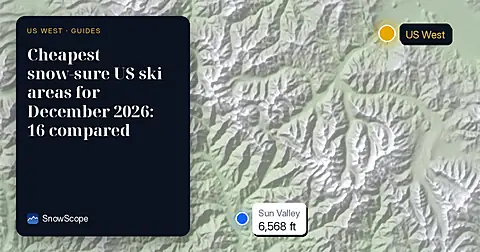
16 US ski areas ranked by December 15 snow odds and adult day-ticket price. Grand Targhee leads at 100% odds; five areas combine over 80% odds with tickets under $80. Data from 13 November 2026.

For a low-cost December family ski week at Astún-Candanchú, aim for late December when top slopes hold good snow in 67 % of past winters.

Only Zugspitze and upper Fellhorn reliably hold 30 cm by mid-December. Lower Bavarian hills offer cheaper tickets but much lower snow odds. Data from 13 November 2026.

Tromsø's husky farms open from mid-November. On 13 November, town had 6 cm but the mountains held 44 cm. Here's how to book and what to know.

Puy-Saint-Vincent pairs a 44 EUR adult 1-day pass with solid December snow higher up, compared here with its big neighbour Serre Chevalier.

Sälen station near Kläppen measured 45 cm on 13 November after one night of heavy snow. Rain and mild air arrive this week. Data from 13 November 2026.

Grand Targhee holds reliable December snow at all heights. At mid-mountain, 46 in (118 cm) is typical by mid-December, with 100% of winters reaching 20 in (50 cm) or more. Data from 13 November 2026.

Oppdal's base has 60 cm snow on a typical 15 December, with 93% of winters holding 30 cm or more in mid-December. Data from 46 winters.

Grimentz-Zinal offers 71 km of runs and reliable high-altitude snow for your December trip, with 6-day passes at CHF 339.00.

Austria before Christmas: Galtür EUR 258 and Kühtai EUR 269 for 6 days with 30 cm in over 90 % of winters; glaciers cost more, small hills are a gamble.

Planning a December trip to Baqueira Beret? See our snow history, ticket prices starting at 70,00 € for a 1-day pass, and how it compares to Astún-Candanchú.

No snow in Bergen on 14 November: bare ground in town, 5 cm at Kvamskogen 35 km away. Heavy rain Sunday. Year-round dog rules apply.

We rank French ski resorts by December snow odds and checked pass prices, starting from 36.00 EUR for an adult day pass in Les Karellis.

December brings only 18 cm typical depth at mid-mountain in Oukaimeden, versus 53 cm in March. Early season is thin but possible. Data 13 November 2026.

Galtür's mid-mountain holds 55 cm on a typical 15 December. Low-season passes cost EUR 55.50 until 18 December. Data from 46 winters, 1980-81 to 2025-26.

Geilo's mid-mountain stays skiable in 96% of Decembers. Typical depth on 15 Dec: 42 cm base, 57 cm mid, 68 cm top. Day pass from NOK 590.

Göteborg has 0 cm of snow on 14 November. The weekend is mild. November's leash rules are relaxed: explore parks and forests with your dog.

Grandvalira is often sold as cheap December skiing, yet natural snow at the base averages just 9 cm in past winters.

Helsinki has no snow on 14 November, but plenty of dog parks and forests. Snow usually arrives around 20 November.

On 15 December, Hemsedal shows 32 cm at base, 70 cm at mid-mountain and 106 cm at top. Height is everything here.

On 15 December at 3245 m, Hintertux has 98 cm of snow in 46 winters of history. Every winter had 30 cm or more in the week before Christmas up there.

Compare December snow odds and checked lift pass prices starting at 40.00 EUR across Italian ski areas for your weekend drive.

Kühtai's base at 1939 m stays reliably snowy in December. On 15 December typically 60 cm at base, 72 cm at mid-mountain, 112 cm at top. Low-season 6-day pass EUR 269 until 18 December.

Les 2 Alpes reaches 3511 m for high snow in December 2026, with an adult 6-day pass priced at 266.50 EUR.

Les Karellis offers 45 km of runs and a 6-day adult pass for 191.00 EUR with a 98 % chance of snow mid-mountain in late December.

Levi's December snow has strengthened over time. Last 15 winters: 100% of Christmas weeks had 30 cm or more. Typical depth 15 December: 38 cm. Data 13 November 2026.

Ski Livigno for 51.50 EUR per day before December 18 when the snow at the top reaches 30cm in 100 % of past winters.

On 15 December at Michlifen, 89% of winters are nearly bare. The best chance comes after a storm, not on the calendar. Data from 13 November 2026.

Montgenèvre has 56 cm of usual December snow at its base, giving weekend drivers deeper early cover than Sestriere across the border.

Obertauern December skiing: 43 cm on a typical 15 December at mid-mountain, and a 6-day pass of EUR 331 before Christmas. Snow history and prices.

At Oukaïmeden ski resort in Morocco, a typical December 15 brings only 16 cm at mid-mountain. SnowScope shows odds from 46 winters of data.
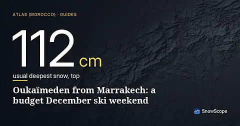
Oukaïmeden is 50 km from Marrakech. December snow is thin and unpredictable: plan around storms, not the calendar. Data from 13 November 2026.

On 15 December, Oukaïmeden mid-mountain has 16 cm vs Val Thorens 89 cm. We checked lift prices. Data from 13 November 2026.

Pila above Aosta pairs a flat 60.00 EUR day pass with reliable December snow on its upper slopes.

Saas-Fee lifts reach 3556 m where our snow history shows 100 % of past winters have at least 30 cm of snow by mid-December.

Mid-mountain snow reaches 30 cm in 83–100 % of Decembers across Scandinavia. Fixed prices in Finland; dynamic pricing in Norway and Sweden. Data from 46 winters, 13 November 2026.

December snow odds from 46 winters and checked day prices: Ski Cooper $49, Les 3 Vallées €75.70, Oukaïmeden no official tariff. Where a cheap December ski day works.